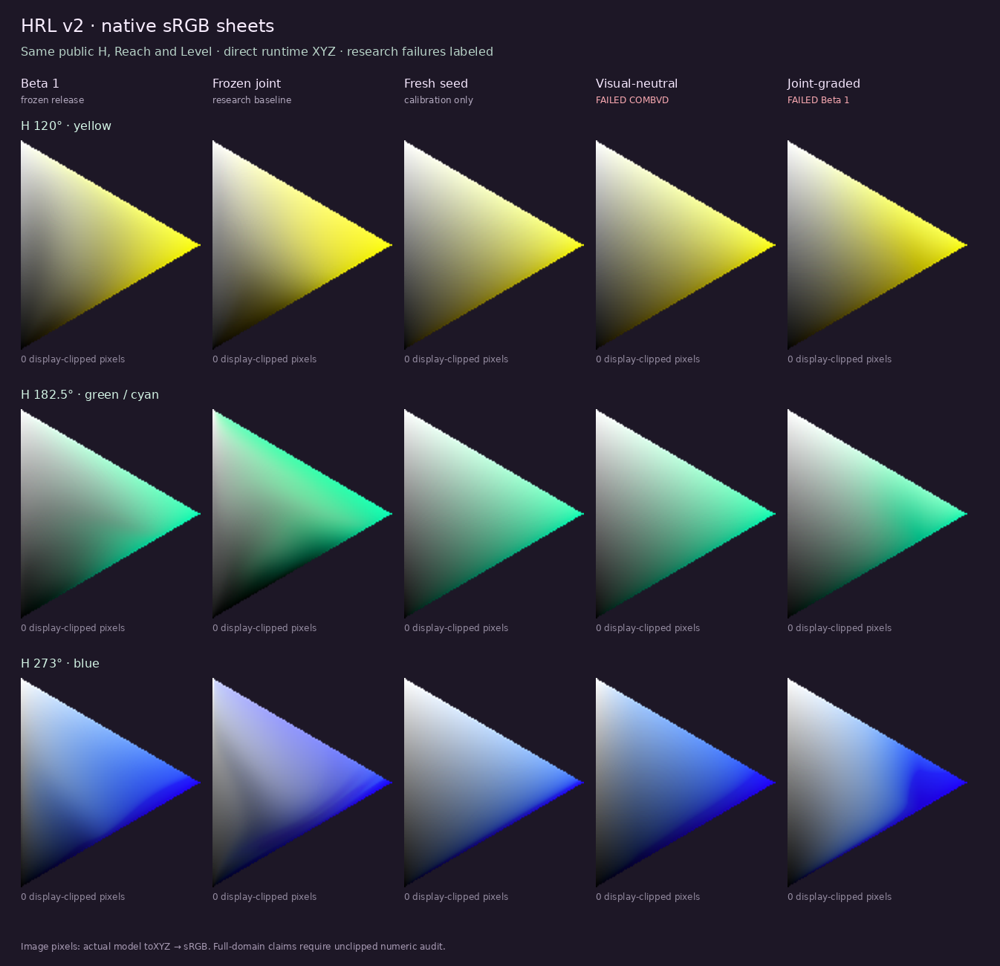
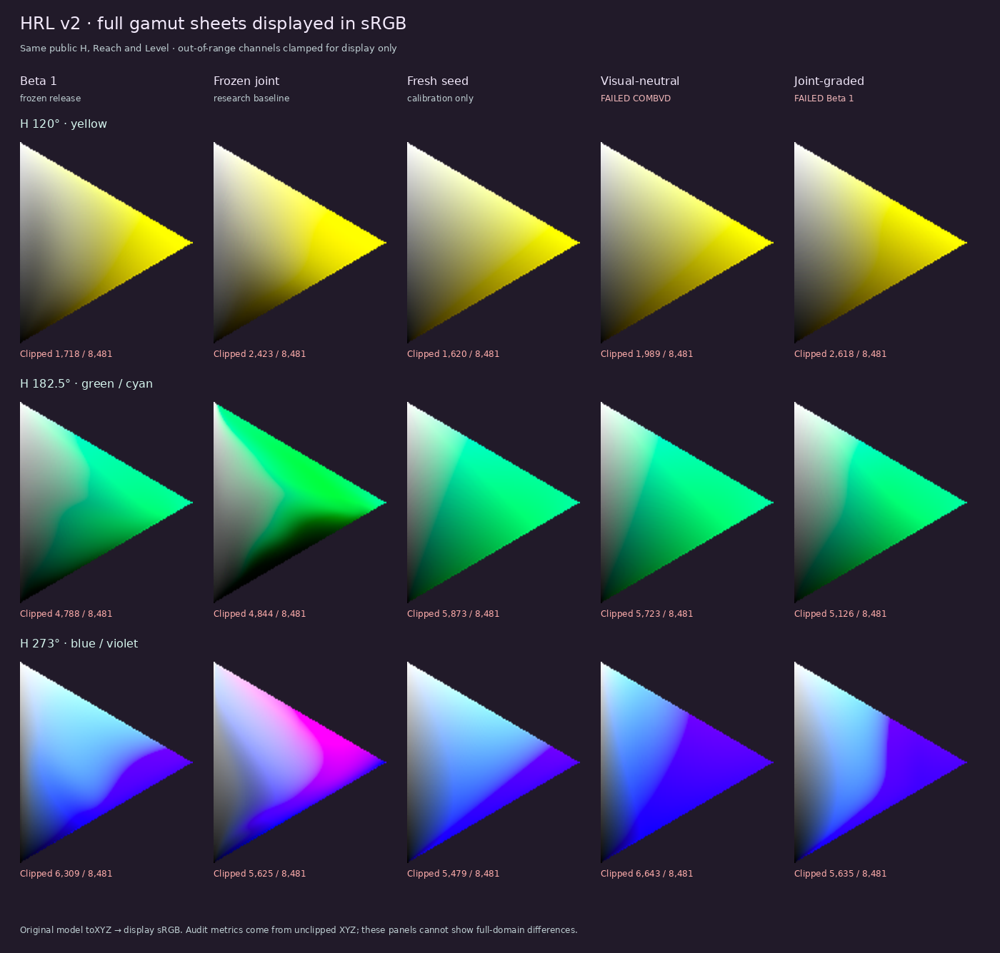
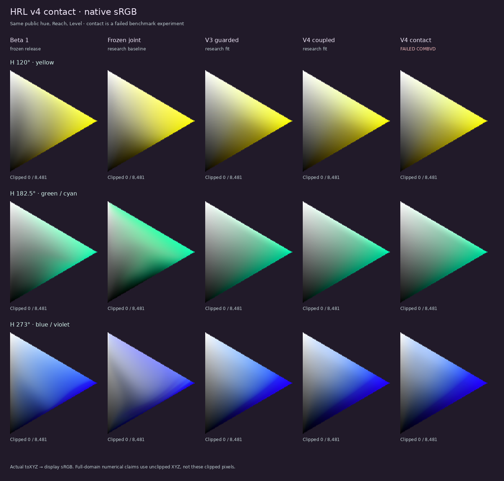
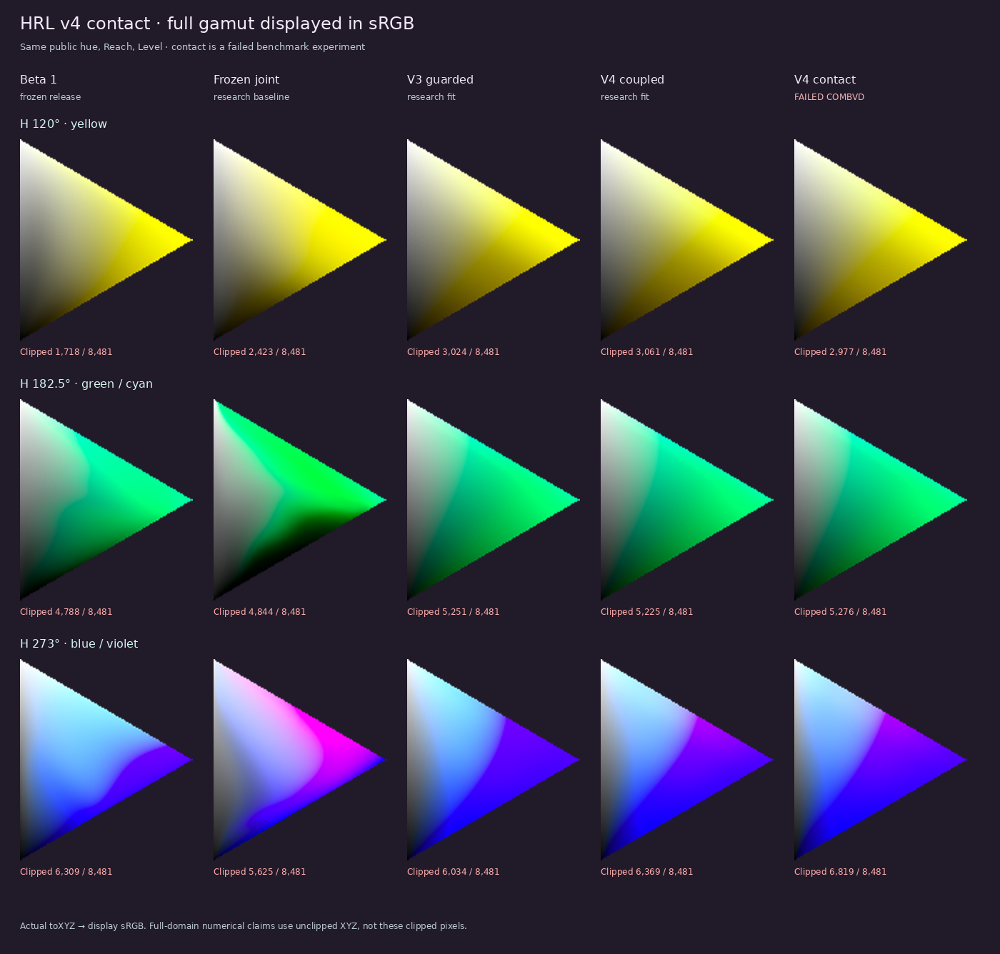

Rebuilding Reach and Level
Yellow improves in the frozen joint fit. Other sheets acquire hue shifts, pale regions, and uneven paths. We have rebuilt the shared Reach/Level map from the physical chart, tested two new fits, and identified a structural limit to change next.
Two first physical-field fits, two conditional Reach/Level fits, and two conditional plus hue fits fail the combined visual and observer gate. The final fit improves sampled yellow and blue points and reduces a full lightness reversal, but its observer scores worsen. There is no new default bank.
What the sheets show
Same public hue, Reach, and Level; actual native sRGB runtime colors. The middle three hues make the tradeoffs visible: H120 yellow is more luminous in joint, H182.5 drifts green near white, and H273 develops a paler blue interior. The first fresh seed is smoother but gray through much of the middle; the two fitted records introduce different failures.

See the same sheets in the full physical domain, shown on an sRGB screen

Two measured symptoms stay separate. On 24 regular hues, mean native white-to-vivid step variation is .198 for Beta 1, .598 for joint, .208 for visual-neutral, and .466 for joint-graded. In full, the worst sampled single GenSpace J drop while Level increases at fixed public Reach is .04742, .00608, .10198, and .10937, respectively. Lower is smoother or less reversing on these sampled paths; neither measure alone is a visual preference test. Read the path protocol and all grids.
The two fitted records do not pass
Weighted COMBVD STRESS, lower is better. These observer pairs were part of development; each column has its own exact population.
| Model | Native retained 3,331 pairs | Native mapped 3,813 pairs | Full retained 3,813 pairs |
|---|---|---|---|
| Beta 1 | 29.107048 | 34.489196 | 29.948555 |
| Frozen joint | 26.795161 | 33.358237 | 26.902322 |
| Fresh visual-neutral · failed | 47.162313 | 48.075028 | 48.638045 |
| Fresh joint-graded · failed | 36.176614 | 39.274594 | 36.677658 |
All three populations completed in the actual JavaScript runtime. The 3,813-pair native column includes 482 mapped pairs, so it cannot stand in for the 3,331-pair retained result. The 21-column ColorBench report records some gains on individual judges but large COMBVD losses. Judge units differ, and these datasets are not pristine independent validation.
Why start again?
Our first fresh model uses two positive-density curves, which keeps the public triangle invertible. Yet it ties each sheet's interior saturation to its white edge and forces chromatic physical brightness to stay above gray. The existing blue behavior violates both assumptions. Even with an invertible physical map, the first seed reverses perceptual lightness along fixed Reach in full: worst sampled step 0.12655 J, compared with Beta 1 0.04742 J and joint 0.00608 J.
The conditional field uses a positive saturation curve conditional on Level and a positive brightness curve conditional on saturation. This allows the interior to differ from the white edge and to move to either side of gray while retaining an exact inverse, one coefficient bank for native/full, and the same physical anchors. A separately versioned interior hue term was also jointly fitted. All closed fits here fail:
| Conditional model | Native retained | Native mapped | Full retained | Worst full shifted J step drop |
|---|---|---|---|---|
| Joint with WITT withheld · failed | 37.307936 | 41.179734 | 32.610459 | .10152 |
| Stronger visual guard · failed | 37.868645 | 40.537667 | 34.809360 | .06114 |
| Coupled conditional plus hue · failed | 38.477101 | 40.809677 | 35.174370 | .01705 |
| Yellow/blue contact fit · failed | 38.715122 | 41.339157 | 35.773916 | .00919 |
Scores include all pairs after fitting; WITT was omitted only from the fit loss and performed poorly when evaluated separately. The lightness drops use the same direct-runtime shifted 72-hue protocol, seven fixed-Reach paths, and 65 samples per path. The contact bank improves nearby held-out yellow and blue values but worsens COMBVD. Conditional fit and holdout · Coupled v4 judge board · Contact fit judge board and provenance.
Did the focused fit solve yellow and blue?
It brightens the yellow and restores some blue chroma against its immediate predecessor on nearby held-out hues, while keeping the H182.5 cyan sheet nearly unchanged. It still misses the stronger reference for each material: native held-out blue relative GenSpace chroma averages .12906 versus Beta 1 .25332; native held-out yellow physical Y averages .60242 versus joint .70431. Its three observer populations worsen. See the unclipped direct-runtime probes and complete judged board.

Full-domain version shown through an sRGB screen

What qualifies a new release?
- Prove the new inverse, gamut import, pseudo-RGB carrier, endpoints, gray, and seam on the actual runtime and at numerical edge cases.
- Inspect all-hue, offset-hue, and high-resolution native/full sheets, including yellow, cyan, blue, white and black edges, fixed Level and fixed Reach. Check unclipped GenSpace paths for full.
- Only after a record is closed, score the separate COMBVD populations, six families, and pinned ColorBench judges; reserve a source family or hue sector when a fit looks promising.
- Change the Beta 1 default only after a shared bank improves the visible defects without giving back observer performance. The stricter observer target is the frozen joint fit, with its sheet defects corrected.